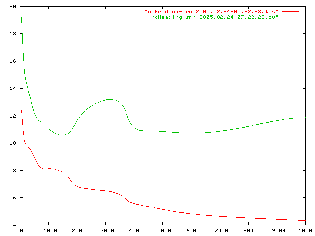
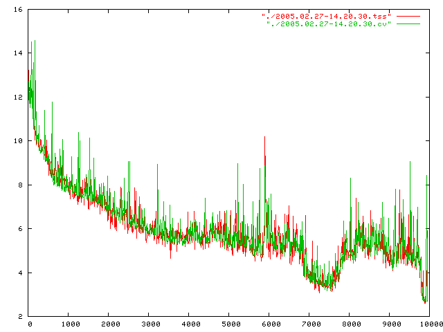

|
|||||||
| [ Home ] | [ Software ] | [ Curriculum ] | [ Hardware ] | [ Community ] | [ News ] | [ Publications ] | [ Search ] |
|
1. Memory, Representation and Abstraction
Recall Elman's
Could this same, simple methodology be used in a non-symbolic world? Yes, but the real world has some issues:
1.1. The Human Network Experiments
1.2. What can be done about catastrophic forgetting?Recall our goals BringingUpRobot
2. Governor For Neural NetworksSomething like a Self-Organizing Map that sits between the environment and the network that automatically "balances" the categories of training data.
2.1. A Governor for a Feedforward NetworkCategories [input] + [output]
2.2. A Governor for a SRNCategories [input] + [context] + [output]
2.3. It works!  |
| [ Home ] | [ Software ] | [ Curriculum ] | [ Hardware ] | [ Community ] | [ News ] | [ Publications ] | [ Search ] |
 View Wiki Source | Edit Wiki Source | Mail Webmaster
View Wiki Source | Edit Wiki Source | Mail Webmaster | |||||||